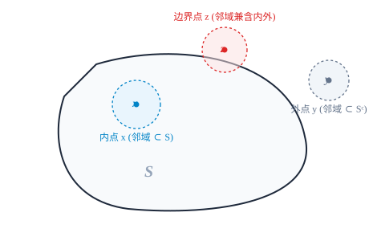
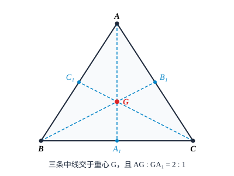
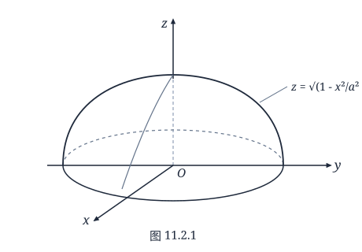
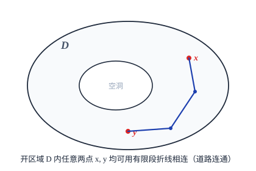

第十一章 Euclid 空间上的极限和连续
§1 Euclid 空间上的基本定理
到目前为止，我们在数学分析课程中学习的都只是一元函数的分析性质．但在现实生活中，除了非常简单的情况之外，可以仅用一个自变量和一个因变量的变化关系来刻画的问题可以说是比较少的．比如，即便像是物理学中研究质点运动这么一个相对较为容易的问题，也需要用到三个空间变量 $x, y, z$ 和一个时间变量 $t$ 以及多个函数值（如位置、速度、加速度、动量等），更不用说在化学、生物及社会科学领域产生的远为复杂的情况．这种多自变量和多因变量的变化关系，反映到数学上就是多元函数（或多元函数组，即向量值函数）．
从本节开始我们将转向研究多元函数（组）．多元函数的分析性质无非也是极限论、连续性、可微性、可积性等，它们与一元函数的相应性质既有紧密联系，又有很大差别．希望读者“温故而知新”，在学习中注意对照、分析它们本质上的异同，举一反三，收到事半功倍之效果．
Euclid 空间上的距离与极限
前面说过，极限理论是整个数学分析的基础．在导出多元函数的极限定义之前，我们先来回忆一下一元函数的情况．
极限定义
$$ \lim_{x \to x_0} f(x) = A \iff \forall \varepsilon > 0, \, \exists \delta > 0, \, \forall x \, (0 < |x - x_0| < \delta) : |f(x) - A| < \varepsilon $$意味着，在自变量的变化过程中，只要 $x$ 与 $x_0$ 充分接近（$x \neq x_0$），函数值 $f(x)$ 就可以与 $A$ 任意接近．而这个“接近”，不管是用符号“$0 < |x - x_0| < \delta$”和“$|f(x) - A| < \varepsilon$”表示，还是用语言“在 $x_0$ 的 $\delta$ 去心邻域 $O(x_0, \delta) \setminus \{x_0\}$ 中”和“落在点 $A$ 的 $\varepsilon$ 邻域中”表示，实质上都是用绝对值，即一维空间中两点间的距离刻画的．显而易见，若没有距离的概念和定义，就无所谓“接近”或“不接近”，也就没有“收敛”和“发散”．收敛就是距离趋向于零．
对于多元函数（组），上述的 $x, x_0$（及 $f(x), A$）都是由多个分量组成的，为了研究多元函数的性质，我们先要将“距离”的概念推广至高维空间，定义出类似于“绝对值”那样的度量标准，然后才能在此基础上去相应地定义极限，进而构筑整个多元分析理论．
记 $\mathbb{R}$ 为实数全体，定义 $n$ 个 $\mathbb{R}$ 的 Descartes 乘积集为
$$ \mathbb{R}^n = \mathbb{R} \times \mathbb{R} \times \cdots \times \mathbb{R} = \{(x_1, x_2, \dots, x_n) \mid x_i \in \mathbb{R}, \, i = 1, 2, \dots, n\}. $$$\mathbb{R}^n$ 中的元素 $\boldsymbol{x} = (x_1, x_2, \dots, x_n)$ 称为向量或点，$x_i$ 称为 $\boldsymbol{x}$ 的第 $i$ 个坐标．特别地，$\mathbb{R}^n$ 中的零元素记为 $\boldsymbol{0} = (0, 0, \dots, 0)$．
设 $\boldsymbol{x} = (x_1, x_2, \dots, x_n), \boldsymbol{y} = (y_1, y_2, \dots, y_n)$ 为 $\mathbb{R}^n$ 中任意两个向量，$\lambda$ 为任意实数，定义 $\mathbb{R}^n$ 中的加法和数乘运算：
$$ \begin{aligned} \boldsymbol{x} + \boldsymbol{y} &= (x_1 + y_1, x_2 + y_2, \dots, x_n + y_n), \\ \lambda \boldsymbol{x} &= (\lambda x_1, \lambda x_2, \dots, \lambda x_n), \end{aligned} $$$\mathbb{R}^n$ 就成为向量空间．
如果再在 $\mathbb{R}^n$ 上引入内积运算
$$ \langle \boldsymbol{x}, \boldsymbol{y} \rangle = x_1 y_1 + x_2 y_2 + \cdots + x_n y_n = \sum_{k=1}^n x_k y_k, $$那么它就被称为 Euclid 空间．
容易验证内积满足以下性质：设 $\boldsymbol{x}, \boldsymbol{y}, \boldsymbol{z} \in \mathbb{R}^n, \lambda, \mu \in \mathbb{R}$，则
(1)（正定性）$\langle \boldsymbol{x}, \boldsymbol{x} \rangle \geqslant 0$，而 $\langle \boldsymbol{x}, \boldsymbol{x} \rangle = 0$ 当且仅当 $\boldsymbol{x} = \boldsymbol{0}$；
(2)（对称性）$\langle \boldsymbol{x}, \boldsymbol{y} \rangle = \langle \boldsymbol{y}, \boldsymbol{x} \rangle$；
(3)（线性性）$\langle \lambda \boldsymbol{x} + \mu \boldsymbol{y}, \boldsymbol{z} \rangle = \lambda \langle \boldsymbol{x}, \boldsymbol{z} \rangle + \mu \langle \boldsymbol{y}, \boldsymbol{z} \rangle$；
(4)（Schwarz 不等式）$\langle \boldsymbol{x}, \boldsymbol{y} \rangle^2 \leqslant \langle \boldsymbol{x}, \boldsymbol{x} \rangle \langle \boldsymbol{y}, \boldsymbol{y} \rangle$．
我们仅说明一下 (4)．由 (1)—(3) 可得出，对于任意 $\lambda \in \mathbb{R}$ 都成立
$$ \langle \lambda \boldsymbol{x} + \boldsymbol{y}, \lambda \boldsymbol{x} + \boldsymbol{y} \rangle = \lambda^2 \langle \boldsymbol{x}, \boldsymbol{x} \rangle + 2\lambda \langle \boldsymbol{x}, \boldsymbol{y} \rangle + \langle \boldsymbol{y}, \boldsymbol{y} \rangle \geqslant 0, $$所以其判别式不大于零，即
$$ 4\langle \boldsymbol{x}, \boldsymbol{y} \rangle^2 - 4\langle \boldsymbol{x}, \boldsymbol{x} \rangle \langle \boldsymbol{y}, \boldsymbol{y} \rangle \leqslant 0. $$这就得到了 Schwarz 不等式．
平面解析几何中两点 $\boldsymbol{x} = (x_1, x_2), \boldsymbol{y} = (y_1, y_2)$ 间的距离公式
$$ \sqrt{(x_1 - y_1)^2 + (x_2 - y_2)^2} $$给我们以启示：可以按照这样的方式，为具有更多个分量的“点”定义两点间的距离．仍用绝对值的符号表示推广到 $\mathbb{R}^n$ 上的“距离”，则有
定义 11.1.1
Euclid 空间 $\mathbb{R}^n$ 中任意两点 $\boldsymbol{x} = (x_1, x_2, \dots, x_n)$ 和 $\boldsymbol{y} = (y_1, y_2, \dots, y_n)$ 的距离定义为
$$ |\boldsymbol{x} - \boldsymbol{y}| = \sqrt{(x_1 - y_1)^2 + (x_2 - y_2)^2 + \cdots + (x_n - y_n)^2}; $$并称
$$ \|\boldsymbol{x}\| = \sqrt{\langle \boldsymbol{x}, \boldsymbol{x} \rangle} = \sqrt{\sum_{k=1}^n x_k^2} $$为 $\boldsymbol{x}$ 的 Euclid 范数（简称范数）．
显然，$\boldsymbol{x}$ 的范数 $\|\boldsymbol{x}\|$ 就是 $\boldsymbol{x}$ 到 $\boldsymbol{0}$ 的距离（即 $\boldsymbol{x}$ 的模长）．
定理 11.1.1
距离满足以下性质：
(1)（正定性）$|\boldsymbol{x} - \boldsymbol{y}| \geqslant 0$，而 $|\boldsymbol{x} - \boldsymbol{y}| = 0$ 当且仅当 $\boldsymbol{x} = \boldsymbol{y}$；
(2)（对称性）$|\boldsymbol{x} - \boldsymbol{y}| = |\boldsymbol{y} - \boldsymbol{x}|$；
(3)（三角不等式）$|\boldsymbol{x} - \boldsymbol{z}| \leqslant |\boldsymbol{x} - \boldsymbol{y}| + |\boldsymbol{y} - \boldsymbol{z}|$．
证明留给读者．
定义了距离就可以引入邻域以及收敛的概念．
定义 11.1.2
设 $\boldsymbol{a} = (a_1, a_2, \dots, a_n) \in \mathbb{R}^n, \delta > 0$，则点集
$$ \begin{aligned} O(\boldsymbol{a}, \delta) &= \{\boldsymbol{x} \in \mathbb{R}^n \mid |\boldsymbol{x} - \boldsymbol{a}| < \delta\} \\ &= \left\{\boldsymbol{x} \in \mathbb{R}^n \;\middle|\; \sqrt{(x_1 - a_1)^2 + (x_2 - a_2)^2 + \cdots + (x_n - a_n)^2} < \delta\right\} \end{aligned} $$称为点 $\boldsymbol{a}$ 的 $\delta$ 邻域，$\boldsymbol{a}$ 称为这个邻域的中心，$\delta$ 称为邻域的半径．
特别地，$O(\boldsymbol{a}, \delta)$ 在 $\mathbb{R}$ 上就是开区间，在 $\mathbb{R}^2$ 上是开圆盘，在 $\mathbb{R}^3$ 上则是开球．
定义 11.1.3
设 $\{\boldsymbol{x}_k\}$ 是 $\mathbb{R}^n$ 中的一个点列．若存在定点 $\boldsymbol{a} \in \mathbb{R}^n$，对于任意给定的 $\varepsilon > 0$，存在正整数 $K$，使得当 $k > K$ 时，
$$ |\boldsymbol{x}_k - \boldsymbol{a}| < \varepsilon \quad (\text{即 } \boldsymbol{x}_k \in O(\boldsymbol{a}, \varepsilon)), $$则称点列 $\{\boldsymbol{x}_k\}$ 收敛于 $\boldsymbol{a}$，记为 $\lim_{k \to \infty} \boldsymbol{x}_k = \boldsymbol{a}$，而称 $\boldsymbol{a}$ 为点列 $\{\boldsymbol{x}_k\}$ 的极限．
一个点列不收敛就称其发散．
记 $\boldsymbol{x}_k = (x_1^k, x_2^k, \dots, x_n^k) \; (k = 1, 2, \dots), \boldsymbol{a} = (a_1, a_2, \dots, a_n)$，利用不等式
$$ |x_j^k - a_j| \leqslant |\boldsymbol{x}_k - \boldsymbol{a}| = \sqrt{\sum_{i=1}^n (x_i^k - a_i)^2} \leqslant \sum_{i=1}^n |x_i^k - a_i|, \quad j = 1, 2, \dots, n $$可以得到
定理 11.1.2
$\lim_{k \to \infty} \boldsymbol{x}_k = \boldsymbol{a}$ 的充分必要条件是 $\lim_{k \to \infty} x_i^k = a_i \; (i = 1, 2, \dots, n)$．
根据此定理，我们可以利用对点列分量的讨论，将一维的一些结论平行地推广到高维去．
前面已经给出了 $\mathbb{R}$ 中收敛数列的一些性质，如唯一性、有界性、保序性、夹逼性及四则运算法则．由于高维的两个点之间不存在大小关系，因此保序性和夹逼性这两个与比较大小有关的性质已不再有意义了．
有界性牵涉到的是点的模长，我们对高维点集的有界性作如下定义：
定义 11.1.4
设 $S$ 是 $\mathbb{R}^n$ 上的点集．若存在正数 $M$，使得对于任意 $\boldsymbol{x} \in S$，
$$ \|\boldsymbol{x}\| \leqslant M, $$（或等价地，存在正数 $M'$ 使得 $S \subset O(\boldsymbol{0}, M')$）则称 $S$ 为有界集．
可以证明唯一性（收敛点列 $\{\boldsymbol{x}_k\}$ 的极限是唯一的）、有界性（收敛点列 $\{\boldsymbol{x}_k\}$ 必定有界）和极限的线性运算法则在高维情况依然成立．
开集与闭集
在一维的情况，闭区间上的许多重要结果，如闭区间套定理、连续函数的若干性质，在开区间是不成立的．因此有理由相应地对高维空间的点集作类似划分．
设 $S$ 是 $\mathbb{R}^n$ 上的点集，它在 $\mathbb{R}^n$ 上的补集 $\mathbb{R}^n \setminus S$ 记为 $S^c$．对于任意 $\boldsymbol{x} \in \mathbb{R}^n$，从其邻域与 $S$ 的关系来分，无非是下列三种情况之一：
(1) 存在 $\boldsymbol{x}$ 的一个 $\delta$ 邻域 $O(\boldsymbol{x}, \delta)$ 完全落在 $S$ 中（注意：这时 $\boldsymbol{x}$ 必属于 $S$），这时称 $\boldsymbol{x}$ 是 $S$ 的内点．$S$ 的内点全体称为 $S$ 的内部，记为 $S^\circ$．
(2) 存在 $\boldsymbol{x}$ 的一个 $\delta$ 邻域 $O(\boldsymbol{x}, \delta)$ 完全不落在 $S$ 中，这时称 $\boldsymbol{x}$ 是 $S$ 的外点．
(3) 不存在 $\boldsymbol{x}$ 的具有上述性质的 $\delta$ 邻域，即 $\boldsymbol{x}$ 的任意 $\delta$ 邻域既包含 $S$ 中的点，又包含不属于 $S$ 的点，那么就称 $\boldsymbol{x}$ 是 $S$ 的边界点．$S$ 的边界点的全体称为 $S$ 的边界，记为 $\partial S$．
要注意的是，内点必属于 $S$，外点必不属于 $S$（或者说必属于 $S^c$），但边界点可能属于 $S$，也可能不属于 $S$．
内点、外点与边界点的示意图见图 11.1.1．

进一步，若存在 $\boldsymbol{x}$ 的一个邻域，其中只有 $\boldsymbol{x}$ 点属于 $S$，则称 $\boldsymbol{x}$ 是 $S$ 的孤立点．显然孤立点必是边界点．
若 $\boldsymbol{x}$ 的任意邻域都含有 $S$ 中的无限个点，则称 $\boldsymbol{x}$ 是 $S$ 的聚点．$S$ 的聚点的全体记为 $S'$．显然，$S$ 的内点必是 $S$ 的聚点；$S$ 的边界点，只要不是 $S$ 的孤立点，也必是 $S$ 的聚点．因此 $S$ 的聚点可能属于 $S$，也可能不属于 $S$．例如在 $\mathbb{R}$ 中，$0$ 是点集 $\left\{\frac{1}{n} \;\middle|\; n = 1, 2, \dots\right\}$ 的聚点，但它不属于这个点集．
定理 11.1.3
$\boldsymbol{x}$ 是点集 $S \, (\subset \mathbb{R}^n)$ 的聚点的充分必要条件是：存在点列 $\{\boldsymbol{x}_k\}$ 满足 $\boldsymbol{x}_k \in S, \boldsymbol{x}_k \neq \boldsymbol{x} \; (k = 1, 2, \dots)$，使得 $\lim_{k \to \infty} \boldsymbol{x}_k = \boldsymbol{x}$．
证明留作习题．
现在我们可以引出“开”和“闭”的概念了．
定义 11.1.5
设 $S$ 是 $\mathbb{R}^n$ 上的点集．若 $S$ 中的每一个点都是它的内点，则称 $S$ 为开集；若 $S$ 包含了它的所有的聚点，则称 $S$ 为闭集．
$S$ 与它的聚点全体 $S'$ 的并集称为 $S$ 的闭包，记为 $\bar{S}$．
例 11.1.1
在 $\mathbb{R}^2$ 上，设
$$ S = \{(x, y) \mid 1 \leqslant x^2 + y^2 < 4\}, $$那么
$$ \begin{aligned} S^\circ &= \{(x, y) \mid 1 < x^2 + y^2 < 4\}; \\ \partial S &= \{(x, y) \mid x^2 + y^2 = 1\} \cup \{(x, y) \mid x^2 + y^2 = 4\}; \\ S' &= \{(x, y) \mid 1 \leqslant x^2 + y^2 \leqslant 4\} = \bar{S}. \end{aligned} $$例 11.1.2
证明邻域是开集．
证 设邻域为 $O(\boldsymbol{a}, r)$，$\boldsymbol{q}$ 为 $O(\boldsymbol{a}, r)$ 上的任一点，则 $|\boldsymbol{q} - \boldsymbol{a}| < r$．因此存在正数 $h$ 使得
$$ |\boldsymbol{q} - \boldsymbol{a}| < r - h. $$于是，对任意 $\boldsymbol{x} \in O(\boldsymbol{q}, h)$，成立不等式
$$ |\boldsymbol{x} - \boldsymbol{a}| \leqslant |\boldsymbol{x} - \boldsymbol{q}| + |\boldsymbol{q} - \boldsymbol{a}| < r, $$因此 $\boldsymbol{x} \in O(\boldsymbol{a}, r)$，即 $\boldsymbol{q}$ 是 $O(\boldsymbol{a}, r)$ 的内点，由定义，$O(\boldsymbol{a}, r)$ 是开集．
容易证明：集合 $\{\boldsymbol{x} \in \mathbb{R}^n \mid a_i < x_i < b_i, \, i = 1, 2, \dots, n\}$ 和 $\{\boldsymbol{x} \in \mathbb{R}^n \mid \sum_{i=1}^n (x_i - a_i)^2 < r^2\}$ 都是开集，它们分别称为 $n$ 维开矩形和 $n$ 维开球；集合 $\{\boldsymbol{x} \in \mathbb{R}^n \mid a_i \leqslant x_i \leqslant b_i, \, i = 1, 2, \dots, n\}$ 和 $\{\boldsymbol{x} \in \mathbb{R}^n \mid \sum_{i=1}^n (x_i - a_i)^2 \leqslant r^2\}$ 都是闭集，它们分别称为 $n$ 维闭矩形和 $n$ 维闭球．
关于闭集有如下重要结论，它对于一些问题的证明是个有力的工具．
定理 11.1.4
$\mathbb{R}^n$ 上的点集 $S$ 为闭集的充分必要条件是 $S^c$ 是开集．
证 必要性：若 $S$ 为闭集，由于 $S$ 的一切聚点都属于 $S$，因此，对于任意 $\boldsymbol{x} \in S^c$，$\boldsymbol{x}$ 不是 $S$ 的聚点．也就是说，存在 $\boldsymbol{x}$ 的邻域 $O(\boldsymbol{x}, \delta)$，使得 $O(\boldsymbol{x}, \delta) \cap S = \varnothing$，即 $O(\boldsymbol{x}, \delta) \subset S^c$．因此 $S^c$ 是开集．
充分性：对任意 $\boldsymbol{x} \in S^c$，由于 $S^c$ 是开集，因此存在 $\boldsymbol{x}$ 的邻域 $O(\boldsymbol{x}, \delta)$，使得 $O(\boldsymbol{x}, \delta) \subset S^c$，即 $\boldsymbol{x}$ 不是 $S$ 的聚点．所以如果 $S$ 有聚点，它就一定属于 $S$．因此 $S$ 为闭集．
从这个定理立即得到：$\mathbb{R}^n$ 上的点集 $S$ 为开集的充分必要条件是 $S^c$ 是闭集．
以下引理是第一章 §1 中的 De Morgan 公式推广至任意多个集合的情况，其证明方法完全类似于第一章．
引理 11.1.1（De Morgan 公式）
设 $\{S_\alpha\}$ 是 $\mathbb{R}^n$ 中的一组（有限或无限多个）子集，则
(1) $\left(\bigcup_\alpha S_\alpha\right)^c = \bigcap_\alpha S_\alpha^c$；
(2) $\left(\bigcap_\alpha S_\alpha\right)^c = \bigcup_\alpha S_\alpha^c$．
定理 11.1.5
(1) 任意一组开集 $\{S_\alpha\}$ 的并集 $\bigcup_\alpha S_\alpha$ 是开集；
(2) 任意一组闭集 $\{T_\alpha\}$ 的交集 $\bigcap_\alpha T_\alpha$ 是闭集；
(3) 任意有限个开集 $S_1, S_2, \dots, S_k$ 的交集 $\bigcap_{i=1}^k S_i$ 是开集；
(4) 任意有限个闭集 $T_1, T_2, \dots, T_k$ 的并集 $\bigcup_{i=1}^k T_i$ 是闭集．
证 (1) 设 $\boldsymbol{x} \in \bigcup_\alpha S_\alpha$，那么存在某个 $\alpha$，使得 $\boldsymbol{x} \in S_\alpha$．而 $S_\alpha$ 是开集，因此 $\boldsymbol{x}$ 就是 $S_\alpha$ 的内点，所以也是 $\bigcup_\alpha S_\alpha$ 的内点，这说明 $\bigcup_\alpha S_\alpha$ 是开集．
(2) 由 De Morgan 公式可得
$$ \left(\bigcap_\alpha T_\alpha\right)^c = \bigcup_\alpha T_\alpha^c. $$$T_\alpha$ 是闭集，从而 $T_\alpha^c$ 是开集．由 (1) 知 $\bigcup_\alpha T_\alpha^c$ 是开集，这说明了 $\bigcap_\alpha T_\alpha$ 的补集是开集，因此它是闭集．
(3) 设 $\boldsymbol{x} \in \bigcap_{i=1}^k S_i$，则对每个 $i = 1, 2, \dots, k$ 都有 $\boldsymbol{x} \in S_i$．由于 $S_i$ 是开集，因此存在 $\boldsymbol{x}$ 的
邻域 $O(\boldsymbol{x}, r_i)$，使得 $O(\boldsymbol{x}, r_i) \subset S_i$．取 $r = \min_{1 \leqslant i \leqslant k} (r_i)$，那么 $O(\boldsymbol{x}, r) \subset \bigcap_{i=1}^k S_i$，即 $\boldsymbol{x}$ 是 $\bigcap_{i=1}^k S_i$ 的内点，因此 $\bigcap_{i=1}^k S_i$ 是开集．
(4) 利用 De Morgan 公式和 (3) 的结论就可以得出．
请读者举例说明任意个开集的交集不一定仍是开集；任意个闭集的并集不一定仍是闭集．
Euclid 空间上的基本定理
下面主要以二维的情况为例，将实数理论中的一些重要结果推广到高维去．
定理 11.1.6（闭矩形套定理）
设 $\Delta_k = [a_k, b_k] \times [c_k, d_k] \; (k = 1, 2, \dots)$ 是 $\mathbb{R}^2$ 上一列闭矩形．如果
(1) $\Delta_{k+1} \subset \Delta_k$，即 $a_k \leqslant a_{k+1} < b_{k+1} \leqslant b_k, \, c_k \leqslant c_{k+1} < d_{k+1} \leqslant d_k, \, k = 1, 2, \dots$；
(2) $\sqrt{(b_k - a_k)^2 + (d_k - c_k)^2} \to 0 \; (k \to \infty)$，
则存在唯一的点 $\boldsymbol{a} = (\xi, \eta)$ 属于 $\bigcap_{k=1}^\infty \Delta_k$，且
$$ \lim_{k \to \infty} a_k = \lim_{k \to \infty} b_k = \xi, \quad \lim_{k \to \infty} c_k = \lim_{k \to \infty} d_k = \eta. $$这只要分别对 $\{[a_k, b_k]\}$ 和 $\{[c_k, d_k]\}$ 运用直线上的闭区间套定理就可以证明．
定理中的“闭”（闭集）和“套”（依次包含）是本质的，而集合 $\Delta_k$ 是否是闭矩形则无关紧要．读者还不难证明如下更一般的结论：
定理 11.1.6'（Cantor 闭区域套定理）
设 $\{S_k\}$ 是 $\mathbb{R}^n$ 上的非空闭集序列，满足
$$ S_1 \supset S_2 \supset \cdots \supset S_k \supset S_{k+1} \supset \cdots, $$以及 $\lim_{k \to \infty} \operatorname{diam} S_k = 0$，则存在唯一点属于 $\bigcap_{k=1}^\infty S_k$．
这里
$$ \operatorname{diam} S = \sup \{|\boldsymbol{x} - \boldsymbol{y}| \mid \boldsymbol{x}, \boldsymbol{y} \in S\}, $$它称为 $S$ 的直径．
例 11.1.3
证明：三角形的中线交于一点．
证 我们将以 $A, B$ 和 $C$ 为顶点的、加上边界的三角形记为 $\triangle ABC$（如图 11.1.2），它是闭集．

显然 $\triangle ABC$ 的三条中线 $AA_1, BB_1$ 和 $CC_1$ 包含在 $\triangle ABC$ 中，因此它们的两两交点也包含在 $\triangle ABC$ 中，且
$$ \triangle A_1 B_1 C_1 \subset \triangle ABC. $$注意三条中线 $AA_1, BB_1$ 和 $CC_1$ 上各有一段 $A_1 A_2, B_1 B_2$ 和 $C_1 C_2$ 成为 $\triangle A_1 B_1 C_1$ 的三条中线，所以 $\triangle ABC$ 的三条中线的两两交点也就是 $\triangle A_1 B_1 C_1$ 的三条中线的两两交点，且交点也包含在 $\triangle A_1 B_1 C_1$ 中，同时又有
$$ \triangle A_2 B_2 C_2 \subset \triangle A_1 B_1 C_1. $$如此做下去的话，就得到三角形组成的闭集序列
$$ \triangle ABC \supset \triangle A_1 B_1 C_1 \supset \triangle A_2 B_2 C_2 \supset \cdots, $$显然它们满足
$$ \lim_{k \to \infty} \operatorname{diam} \triangle A_k B_k C_k = 0, $$因此存在唯一的公共点 $O$ 属于所有这些三角形．
因为 $\triangle ABC$ 的三条中线的两两交点始终包含在每一个三角形内，所以三条中线必定交于一点，而 $O$ 点就是它们的交点．
定理 11.1.7（Bolzano-Weierstrass 定理）
$\mathbb{R}^n$ 上的有界点列 $\{\boldsymbol{x}_k\}$ 中必有收敛子列．
以二维的情况为例，只要先对 $\{\boldsymbol{x}_k\} = \{(x_k, y_k)\}$ 的第一个分量 $\{x_k\}$ 用一维的 Bolzano-Weierstrass 定理，找到其收敛子列 $\{x_{n_k}\}$；再对数列 $\{y_{n_k}\}$ 用一维的 Bolzano-Weierstrass 定理，找到其收敛子列 $\{y_{n_{k_m}}\}$，则 $\{(x_{n_{k_m}}, y_{n_{k_m}})\}$ 就是 $\{\boldsymbol{x}_k\}$ 的收敛子列．
从这个定理立即得到：
推论 11.1.1
$\mathbb{R}^n$ 上的有界无限点集至少有一个聚点．
定义 11.1.6
若 $\mathbb{R}^n$ 上的点列 $\{\boldsymbol{x}_k\}$ 满足：对于任意给定的 $\varepsilon > 0$，存在正整数 $K$，使得对任意 $k, l > K$，成立
$$ |\boldsymbol{x}_l - \boldsymbol{x}_k| < \varepsilon, $$则称 $\{\boldsymbol{x}_k\}$ 为基本点列（或 Cauchy 点列）．
定理 11.1.8（Cauchy 收敛原理）
$\mathbb{R}^n$ 上的点列 $\{\boldsymbol{x}_k\}$ 收敛的充分必要条件是：$\{\boldsymbol{x}_k\}$ 为基本点列．
证 设 $\{\boldsymbol{x}_k\}$ 收敛于 $\boldsymbol{a}$，那么对于任意给定的 $\varepsilon > 0$，存在正整数 $K$，使得当 $k > K$ 时，成立
$$ |\boldsymbol{x}_k - \boldsymbol{a}| < \frac{\varepsilon}{2}. $$因此当 $k, l > K$ 时，由三角不等式得
$$ |\boldsymbol{x}_l - \boldsymbol{x}_k| \leqslant |\boldsymbol{x}_l - \boldsymbol{a}| + |\boldsymbol{x}_k - \boldsymbol{a}| < \varepsilon, $$即 $\{\boldsymbol{x}_k\}$ 为基本点列．
若 $\{\boldsymbol{x}_k\}$ 为基本点列，记 $\boldsymbol{x}_k = (x_1^k, x_2^k, \dots, x_n^k) \; (k = 1, 2, \dots)$，则由不等式
$$ |x_i^l - x_i^k| \leqslant |\boldsymbol{x}_l - \boldsymbol{x}_k| \quad (i = 1, 2, \dots, n), $$可知对每一个固定的 $i = 1, 2, \dots, n$，数列 $\{x_i^k\}$ 是基本数列，因此收敛．再由定理 11.1.2 即知点列 $\{\boldsymbol{x}_k\}$ 收敛．
因此，第二章中给出的从实数的连续性到实数的完备性的 5 个等价定理中，除了“确界存在定理”和“单调有界数列收敛定理”由于涉及点之间的大小关系而在高维空间中不再有意义之外，其余的结论在高维空间依然成立．
紧集
现在引入一个重要的概念．
定义 11.1.7
设 $S$ 为 $\mathbb{R}^n$ 上的点集．如果 $\mathbb{R}^n$ 中的一组开集 $\{U_\alpha\}$ 满足 $\bigcup_\alpha U_\alpha \supset S$，那么称 $\{U_\alpha\}$ 为 $S$ 的一个开覆盖．
如果 $S$ 的任意一个开覆盖 $\{U_\alpha\}$ 中总存在一个有限子覆盖，即存在 $\{U_\alpha\}$ 中的有限个开集 $\{U_{\alpha_i}\}_{i=1}^p$，满足 $\bigcup_{i=1}^p U_{\alpha_i} \supset S$，则称 $S$ 为紧集．
定理 11.1.9（Heine-Borel 定理）
$\mathbb{R}^n$ 上的点集 $S$ 是紧集的充分必要条件为：它是有界闭集．
证 只证明 $n = 2$ 的情形．
必要性：设 $S$ 为紧集，先证它是有界的．显然，$\{O(\boldsymbol{x}, 1) \subset \mathbb{R}^2 \mid \boldsymbol{x} \in S\}$ 是 $S$ 的一个开覆盖，因为 $S$ 是紧集，因此存在 $S$ 的有限子覆盖，即存在 $\boldsymbol{x}_1, \boldsymbol{x}_2, \dots, \boldsymbol{x}_p$，使得 $S \subset \bigcup_{i=1}^p O(\boldsymbol{x}_i, 1)$．这就说明了 $S$ 是有界集．
再用反证法证明 $S$ 是闭集．设存在 $S$ 的聚点 $\boldsymbol{a} \notin S$，构造开集
$$ U_n = \left\{\boldsymbol{x} \;\middle|\; |\boldsymbol{x} - \boldsymbol{a}| > \frac{1}{n}\right\}, $$则 $\bigcup_{n=1}^\infty U_n = \mathbb{R}^2 \setminus \{\boldsymbol{a}\} \supset S$，即 $\{U_n\}$ 是 $S$ 的一个开覆盖．
由聚点定义，存在由无穷多个点组成的小点列 $\{\boldsymbol{x}_k\} \, (\boldsymbol{x}_k \in S, \boldsymbol{x}_k \neq \boldsymbol{a})$ 满足 $\lim_{k \to \infty} \boldsymbol{x}_k = \boldsymbol{a}$．由于对任意一个固定的 $m$，$U_m$ 中至多含有 $\{\boldsymbol{x}_k\}$ 中有限个点（请读者想一下为什么），因此在 $\{U_n\}$ 中不存在 $S$ 的有限子覆盖，这就与 $S$ 是紧集产生了矛盾．所以 $S$ 是闭集．
充分性：用反证法．假设 $S$ 是有界闭集，但不是紧的，那么存在 $S$ 的一个开覆盖 $\{U_\alpha\}$，它不包含 $S$ 的有限子覆盖．
由于 $S$ 为有界点集，那么它必包含在某个 2 维闭正方形 $I_1$ 中．将 $I_1$ 分成 4 个全等的闭正方形 $I_{11}, I_{12}, I_{13}, I_{14}$，那么至少有一个 $I_{1k} \, (1 \leqslant k \leqslant 4)$，使得 $I_{1k} \cap S$ 不能被 $\{U_\alpha\}$ 中的有限个元素所覆盖，取其为 $I_2$．
同样将 $I_2$ 分成 4 个全等的闭正方形 $I_{21}, I_{22}, I_{23}, I_{24}$，也至少有一个 $I_{2k} \, (1 \leqslant k \leqslant 4)$，使得 $I_{2k} \cap S$ 不能被 $\{U_\alpha\}$ 中的有限个元素所覆盖，取其为 $I_3$．
如此下去就得到一列正方形
$$ I_1 \supset I_2 \supset I_3 \supset \cdots, $$满足
(1) 闭集 $I_l \cap S \; (l = 1, 2, 3, \dots)$ 不能被 $\{U_\alpha\}$ 中的有限个元素所覆盖；
(2) $\lim_{l \to \infty} \operatorname{diam}(I_l \cap S) = 0$．
由定理 11.1.6'，存在唯一点 $\boldsymbol{a} = (\xi, \eta) \in \bigcap_{l=1}^\infty (I_l \cap S)$．
任取包含点 $\boldsymbol{a}$ 的开集 $U_* \in \{U_\alpha\}$，只要适当选择 $r$，就有 $O(\boldsymbol{a}, r) \subset U_*$．又由于 $\lim_{l \to \infty} \operatorname{diam}(I_l \cap S) = 0$，则当 $l$ 充分大时就成立 $I_l \cap S \subset O(\boldsymbol{a}, r) \subset U_*$．这就导出了矛盾．
定理 11.1.10
设 $S$ 是 $\mathbb{R}^n$ 上的点集，那么以下三个命题等价：
(1) $S$ 是有界闭集；
(2) $S$ 是紧集；
(3) $S$ 的任一无限子集在 $S$ 中必有聚点．
证 (1) 与 (2) 的等价性就是定理 11.1.9．
(1) $\implies$ (3)：设 $S$ 是有界闭集，由推论 11.1.1 即知 $S$ 的无限子集必有聚点，而 $S$ 是闭集，因此这个聚点必属于 $S$．
(3) $\implies$ (1)：若 $S$ 的任一无限子集在 $S$ 中都有聚点，则显然 $S$ 中的任一收敛点列 $\{\boldsymbol{x}_k\}$ 的极限必属于 $S$，因此 $S$ 含有它的全部聚点，即 $S$ 是闭集．
若此时 $S$ 无界，那么在 $S$ 中存在点列 $\{\boldsymbol{x}_k\}$，满足
$$ \|\boldsymbol{x}_k\| > k, \quad k = 1, 2, \dots. $$显然 $\{\boldsymbol{x}_k\}$ 是无限集，且在 $\mathbb{R}^n$ 中（因而在 $S$ 中）没有聚点．这个矛盾表明 $S$ 是有界的．
Cantor 闭区域套定理、Bolzano-Weierstrass 定理、Cauchy 收敛原理和 Heine-Borel 定理称为 Euclid 空间上的基本定理，它们是相互等价的．
习 题 11.1
-
证明定理 11.1.1：距离满足正定性、对称性和三角不等式．
-
证明：若 $\mathbb{R}^n$ 中的点列 $\{\boldsymbol{x}_k\}$ 收敛，则其极限是唯一的．
-
设 $\mathbb{R}^n$ 中的点列 $\{\boldsymbol{x}_k\}$ 和 $\{\boldsymbol{y}_k\}$ 收敛，证明：对于任何实数 $\alpha, \beta$，成立等式$$ \lim_{k \to \infty} (\alpha \boldsymbol{x}_k + \beta \boldsymbol{y}_k) = \alpha \lim_{k \to \infty} \boldsymbol{x}_k + \beta \lim_{k \to \infty} \boldsymbol{y}_k. $$
-
求下列 $\mathbb{R}^2$ 中子集的内部、边界与闭包：(1) $S = \{(x, y) \mid x > 0, y \neq 0\}$；(2) $S = \{(x, y) \mid 0 < x^2 + y^2 \leqslant 1\}$；(3) $S = \left\{(x, y) \;\middle|\; 0 < x \leqslant 1, y = \sin\frac{1}{x}\right\}$．
-
求下列点集的全部聚点：(1) $S = \left\{(-1)^k \frac{k}{k+1} \;\middle|\; k = 1, 2, \dots\right\}$；(2) $S = \left\{\left(\cos\frac{2k\pi}{5}, \sin\frac{2k\pi}{5}\right) \;\middle|\; k = 1, 2, \dots\right\}$；(3) $S = \{(x, y) \mid (x^2 + y^2)(y^2 - x^2 + 1) \leqslant 0\}$．
-
证明定理 11.1.3：$\boldsymbol{x}$ 是点集 $S \, (\subset \mathbb{R}^n)$ 的聚点的充分必要条件是：存在 $S$ 中的点列 $\{\boldsymbol{x}_k\}$，满足 $\boldsymbol{x}_k \neq \boldsymbol{x} \; (k = 1, 2, \dots)$，且 $\lim_{k \to \infty} \boldsymbol{x}_k = \boldsymbol{x}$．
-
设 $U$ 是 $\mathbb{R}^2$ 上的开集，是否 $U$ 的每个点都是它的聚点？对于 $\mathbb{R}^2$ 中的闭集又如何呢？
-
证明 $S \subset \mathbb{R}^n$ 的所有内点组成的点集 $S^\circ$ 必是开集．
-
证明 $S \subset \mathbb{R}^n$ 的闭包 $\bar{S} = S \cup S'$ 必是闭集．
-
设 $E, F \subset \mathbb{R}^n$．若 $E$ 为开集，$F$ 为闭集，证明：$E \setminus F$ 为开集，$F \setminus E$ 为闭集．
-
证明 Cantor 闭区域套定理．
-
举例说明：满足 $\lim_{k \to \infty} |\boldsymbol{x}_{k+1} - \boldsymbol{x}_k| = 0$ 的点列 $\{\boldsymbol{x}_k\}$ 不一定收敛．
-
设 $E, F \subset \mathbb{R}^n$ 为紧集，证明 $E \cap F$ 和 $E \cup F$ 为紧集．
-
用定义证明点集 $\{0\} \cup \left\{\frac{1}{k} \;\middle|\; k = 1, 2, \dots\right\}$ 是 $\mathbb{R}$ 中的紧集．
-
应用 Heine-Borel 定理直接证明：$\mathbb{R}^n$ 上有界无限点集必有聚点．
§2 多元连续函数
多元函数
许多几何和物理问题中涉及多个自变量．例如三角形的面积 $S$ 由它的底 $a$ 和高 $h$ 决定：
$$ S = \frac{1}{2}ah, $$即面积 $S$ 的变化依赖于底 $a$ 和高 $h$ 的变化．再如圆台的体积 $V$ 和它的两个底半径 $R, r$ 及高 $h$ 之间有关系
$$ V = \frac{\pi h}{3}(R^2 + Rr + r^2), $$即体积 $V$ 的变化同时依赖于 $R, r$ 和高 $h$．
这种例子举不胜举．它们表示的是因变量随多个自变量的变化而相应变化的某种规律，这是一元函数推广，即多元函数．下面几章中将导出多元函数微积分的重要理论和方法．
定义 11.2.1
设 $D$ 是 $\mathbb{R}^n$ 上的点集，$D$ 到 $\mathbb{R}$ 的映射
$$ \begin{aligned} f : D &\to \mathbb{R}, \\ \boldsymbol{x} &\mapsto z \end{aligned} $$称为 $n$ 元函数，记为 $z = f(\boldsymbol{x})$．这时，$D$ 称为 $f$ 的定义域，$f(D) = \{z \in \mathbb{R} \mid z = f(\boldsymbol{x}), \, \boldsymbol{x} \in D\}$ 称为 $f$ 的值域，$\Gamma = \{(\boldsymbol{x}, z) \in \mathbb{R}^{n+1} \mid z = f(\boldsymbol{x}), \, \boldsymbol{x} \in D\}$ 称为 $f$ 的图像．
例 11.2.1
$z = \sqrt{1 - \frac{x^2}{a^2} - \frac{y^2}{b^2}}$ 是二元函数，其定义域为
$$ D = \left\{(x, y) \in \mathbb{R}^2 \;\middle|\; \frac{x^2}{a^2} + \frac{y^2}{b^2} \leqslant 1\right\}, $$函数的图像是一个上半椭球面（见图 11.2.1）．

多元函数的极限
现在我们将一元函数的极限定义推广到多元函数．
定义 11.2.2
设 $D$ 是 $\mathbb{R}^n$ 上的开集，$\boldsymbol{x}_0 = (x_1^0, x_2^0, \dots, x_n^0) \in D$ 为一定点，$z = f(\boldsymbol{x})$ 是定义在 $D \setminus \{\boldsymbol{x}_0\}$ 上的 $n$ 元函数，$A$ 是一个实数．如果对于任意给定的 $\varepsilon > 0$，存在 $\delta > 0$，使得当 $\boldsymbol{x} \in O(\boldsymbol{x}_0, \delta) \setminus \{\boldsymbol{x}_0\}$ 时，成立
$$ |f(\boldsymbol{x}) - A| < \varepsilon, $$则称当 $\boldsymbol{x}$ 趋于 $\boldsymbol{x}_0$ 时 $f$ 收敛，并称 $A$ 为 $f$ 当 $\boldsymbol{x}$ 趋于 $\boldsymbol{x}_0$ 时的（$n$ 重）极限，记为
$$ \lim_{\boldsymbol{x} \to \boldsymbol{x}_0} f(\boldsymbol{x}) = A \quad (\text{或 } f(\boldsymbol{x}) \to A \; (\boldsymbol{x} \to \boldsymbol{x}_0)), \quad \text{或 } \lim_{\substack{x_1 \to x_1^0 \\ x_2 \to x_2^0 \\ \cdots\cdots \\ x_n \to x_n^0}} f(x_1, x_2, \dots, x_n) = A. $$注 在上面的定义中，“$\boldsymbol{x} \in O(\boldsymbol{x}_0, \delta) \setminus \{\boldsymbol{x}_0\}$”也可以用下面的条件
$$ |x_1 - x_1^0| < \delta, \, |x_2 - x_2^0| < \delta, \dots, |x_n - x_n^0| < \delta, \quad \boldsymbol{x} \neq \boldsymbol{x}_0 $$替代．请读者想想为什么．
例 11.2.2
设 $f(x, y) = (x + y) \sin\frac{y}{x^2 + y^2}$，证明 $\lim_{(x, y) \to (0, 0)} f(x, y) = 0$．
证 由于
$$ |f(x, y) - 0| = \left|(x + y) \sin\frac{y}{x^2 + y^2}\right| \leqslant |x + y| \leqslant |x| + |y|, $$所以，对于任意给定的 $\varepsilon > 0$，只要取 $\delta = \frac{\varepsilon}{2}$，那么当 $|x - 0| < \delta, |y - 0| < \delta$，且 $(x, y) \neq (0, 0)$ 时，
$$ |f(x, y) - 0| \leqslant |x| + |y| < \delta + \delta = \frac{\varepsilon}{2} + \frac{\varepsilon}{2} = \varepsilon. $$这说明了 $\lim_{(x, y) \to (0, 0)} f(x, y) = 0$．
对一元函数而言，只要在 $x_0$ 的左、右极限存在且相等，那么函数在 $x_0$ 处的极限就存在．而多元函数就没有这样简单．根据极限存在的定义，要求当 $\boldsymbol{x}$ 以任何方式趋于 $\boldsymbol{x}_0$ 时，函数值都趋于同一个极限．这就为我们判断函数极限的不存在提供了方便，因为若自变量沿不同的两条曲线趋于某一定点时，函数的极限不同或不存在，那么这个函数在该点的极限一定不存在．
例 11.2.3
设 $f(x, y) = \frac{xy}{x^2 + y^2} \; ((x, y) \neq (0, 0))$．
显然，当点 $\boldsymbol{x} = (x, y)$ 沿 $x$ 轴和 $y$ 轴趋于 $(0, 0)$ 时，$f(x, y)$ 的极限都是 $0$．但它沿直线 $y = mx$ 趋于 $(0, 0)$ 时，
$$ \lim_{\substack{x \to 0 \\ y = mx}} f(x, y) = \lim_{x \to 0} \frac{mx^2}{x^2 + m^2 x^2} = \frac{m}{1 + m^2}, $$上式对于不同的 $m$ 有不同的极限值．这说明 $f(x, y)$ 在点 $(0, 0)$ 的极限不存在．
下例说明即使点 $\boldsymbol{x}$ 沿任意直线趋于 $\boldsymbol{x}_0$ 时，$f(\boldsymbol{x})$ 的极限都存在且相等，仍无法保证函数 $f$ 在 $\boldsymbol{x}_0$ 处有极限．
例 11.2.4
设 $f(x, y) = \frac{(y^2 - x)^2}{y^4 + x^2} \; ((x, y) \neq (0, 0))$．
当点 $\boldsymbol{x} = (x, y)$ 沿直线 $y = mx$ 趋于 $(0, 0)$ 时，成立
$$ \lim_{\substack{x \to 0 \\ y = mx}} f(x, y) = \lim_{x \to 0} \frac{(m^2 x^2 - x)^2}{m^4 x^4 + x^2} = 1; $$当点 $\boldsymbol{x} = (x, y)$ 沿 $y$ 轴趋于 $(0, 0)$ 时，也成立 $\lim_{\substack{y \to 0 \\ x = 0}} f(x, y) = 1$，因此当点 $\boldsymbol{x} = (x, y)$ 沿任何直线趋于 $(0, 0)$ 时，$f(x, y)$ 极限存在且相等．
但 $f(x, y)$ 在点 $(0, 0)$ 的极限不存在．事实上，$f$ 在抛物线 $y^2 = x$ 上的值为 $0$，因此当点 $\boldsymbol{x} = (x, y)$ 沿这条抛物线趋于 $(0, 0)$ 时，它的极限为 $0$．
一元函数的极限性质，如唯一性、局部有界性、局部保序性、局部夹逼性及极限的四则运算法则，对二元函数依然成立，这里不再细述，请读者自行加以证明．
累次极限
对重极限 $\lim_{(x, y) \to (x_0, y_0)} f(x, y)$，人们很自然会想到的是，能否在一定条件下将重极限 $(x, y) \to (x_0, y_0)$ 分解成为两个独立的极限 $x \to x_0$ 和 $y \to y_0$，再利用一元函数的极限理论和方法逐个处理之？
这后一种极限称为累次极限．
定义 11.2.3
设 $D$ 是 $\mathbb{R}^2$ 上的开集，$(x_0, y_0) \in D$ 为一定点，$z = f(x, y)$ 为定义在 $D \setminus \{(x_0, y_0)\}$ 上的二元函数．如果对于每个固定的 $y \neq y_0$，极限 $\lim_{x \to x_0} f(x, y)$ 存在，并且极限
$$ \lim_{y \to y_0} \lim_{x \to x_0} f(x, y) $$存在，那么称此极限值为函数 $f(x, y)$ 在点 $(x_0, y_0)$ 的先对 $x$ 后对 $y$ 的二次极限．
同理可定义先对 $y$ 后对 $x$ 的二次极限 $\lim_{x \to x_0} \lim_{y \to y_0} f(x, y)$．
累次极限存在与重极限存在的关系很复杂．例 11.2.3 和例 11.2.4 其实已经告诉我们，二次极限存在不能保证二重极限存在（请读者思考理由）．而从下面的例子可以知道，二重极限存在同样不能保证二次极限存在．
例 11.2.5（二重极限存在，但两个二次极限不存在）
设
$$ f(x, y) = \begin{cases} (x^2 + y^2) \sin\frac{1}{x} \cos\frac{1}{y}, & x \neq 0 \text{ 且 } y \neq 0, \\ 0, & x = 0 \text{ 或 } y = 0. \end{cases} $$由于
$$ |f(x, y)| \leqslant x^2 + y^2, $$所以 $\lim_{(x, y) \to (0, 0)} f(x, y) = 0$．但在 $(0, 0)$ 点两个二次极限显然不存在．
例 11.2.6（二重极限存在，两个二次极限中有一个不存在）
设
$$ f(x, y) = \begin{cases} y \sin\frac{1}{x}, & x \neq 0 \text{ 且 } y \neq 0, \\ 0, & x = 0 \text{ 或 } y = 0. \end{cases} $$在 $(0, 0)$ 点显然有 $\lim_{(x, y) \to (0, 0)} f(x, y) = 0$，即二重极限存在，且
$$ \lim_{x \to 0} \lim_{y \to 0} f(x, y) = \lim_{x \to 0} \left[\lim_{y \to 0} y \sin\frac{1}{x}\right] = 0, $$但先对 $x$ 后对 $y$ 的二次极限不存在．
此外一个二次极限存在不能保证另一个二次极限也存在；即使两个二次极限都存在，也不一定相等．也就是说，两个极限运算不一定可以交换次序（参见本节习题 8 (2)）．
不过，在二重极限存在时，我们有下面的结果：
定理 11.2.1
若二元函数 $f(x, y)$ 在 $(x_0, y_0)$ 点存在二重极限
$$ \lim_{(x, y) \to (x_0, y_0)} f(x, y) = A, $$且当 $x \neq x_0$ 时存在极限
$$ \lim_{y \to y_0} f(x, y) = \varphi(x), $$那么 $f(x, y)$ 在 $(x_0, y_0)$ 点的先对 $y$ 后对 $x$ 的二次极限存在且与二重极限相等，即
$$ \lim_{x \to x_0} \lim_{y \to y_0} f(x, y) = \lim_{x \to x_0} \varphi(x) = \lim_{(x, y) \to (x_0, y_0)} f(x, y) = A. $$证 只要证明 $\lim_{x \to x_0} \varphi(x) = A$ 即可．
对于任意给定的 $\varepsilon > 0$，由于 $\lim_{(x, y) \to (x_0, y_0)} f(x, y) = A$，所以存在 $\delta > 0$，使得当 $0 < \sqrt{(x - x_0)^2 + (y - y_0)^2} < \delta$ 时有
$$ |f(x, y) - A| < \frac{\varepsilon}{2}, $$于是对于每个满足 $0 < |x - x_0| < \delta$ 的 $x$，令 $y \to y_0$，就得到
$$ |\varphi(x) - A| = \lim_{y \to y_0} |f(x, y) - A| \leqslant \frac{\varepsilon}{2} < \varepsilon. $$这就是说，对于任意给定的 $\varepsilon > 0$，存在 $\delta > 0$，使得当 $0 < |x - x_0| < \delta$ 时，
$$ |\varphi(x) - A| < \varepsilon. $$同样可证：在二重极限存在的情况下，如果当 $y \neq y_0, x \to x_0$ 时存在极限 $\lim_{x \to x_0} f(x, y) = \psi(y)$，那么
$$ \lim_{y \to y_0} \lim_{x \to x_0} f(x, y) = \lim_{y \to y_0} \psi(y) = \lim_{(x, y) \to (x_0, y_0)} f(x, y). $$所以，若函数 $f(x, y)$ 的二重极限及两个二次极限都存在，则三者必相等，即
$$ \lim_{y \to y_0} \lim_{x \to x_0} f(x, y) = \lim_{x \to x_0} \lim_{y \to y_0} f(x, y) = \lim_{(x, y) \to (x_0, y_0)} f(x, y). $$这意味着，此时极限运算可以交换次序．
4. 多元函数的连续性
设 $D$ 是 $\mathbb{R}^n$ 上的开集，$z = f(\boldsymbol{x})$ 是定义在 $D$ 上的函数，$\boldsymbol{x}_0 \in D$ 为一定点．如果
$$ \lim_{\boldsymbol{x} \to \boldsymbol{x}_0} f(\boldsymbol{x}) = f(\boldsymbol{x}_0), $$则称函数 $f$ 在点 $\boldsymbol{x}_0$ 连续．用“$\varepsilon$-$\delta$”语言来说就是：如果对于任意给定的 $\varepsilon > 0$，存在 $\delta > 0$，使得当 $\boldsymbol{x} \in O(\boldsymbol{x}_0, \delta)$ 时，成立
$$ |f(\boldsymbol{x}) - f(\boldsymbol{x}_0)| < \varepsilon, $$则称函数 $f$ 在点 $\boldsymbol{x}_0$ 连续．
如果函数 $f$ 在 $D$ 上每一点连续，就称 $f$ 在 $D$ 上连续，或称 $f$ 是 $D$ 上的连续函数．
函数 $f(x, y) = \sin \sqrt{x^2 + y^2}$ 在 $\mathbb{R}^2$ 上连续．
证 设 $(x_0, y_0)$ 为 $\mathbb{R}^2$ 上的任一点，则有
$$ \begin{aligned} |f(x, y) - f(x_0, y_0)| &= |\sin \sqrt{x^2 + y^2} - \sin \sqrt{x_0^2 + y_0^2}| \\ &= 2 \left| \cos \frac{\sqrt{x^2 + y^2} + \sqrt{x_0^2 + y_0^2}}{2} \cdot \sin \frac{\sqrt{x^2 + y^2} - \sqrt{x_0^2 + y_0^2}}{2} \right| \\ &\leqslant 2 \left| \sin \frac{\sqrt{x^2 + y^2} - \sqrt{x_0^2 + y_0^2}}{2} \right| \\ &\leqslant \left| \sqrt{x^2 + y^2} - \sqrt{x_0^2 + y_0^2} \right| \\ &\leqslant \sqrt{(x - x_0)^2 + (y - y_0)^2} \quad \text{（利用三角不等式）}． \end{aligned} $$于是，对于任意给定的 $\varepsilon > 0$，取 $\delta = \varepsilon$，当 $\sqrt{(x - x_0)^2 + (y - y_0)^2} < \delta$ 时就成立
$$ |f(x, y) - f(x_0, y_0)| < \varepsilon. $$这说明 $f(x, y)$ 在点 $(x_0, y_0)$ 连续．由于 $(x_0, y_0)$ 为 $\mathbb{R}^2$ 上的任意一点，所以 $f(x, y)$ 在 $\mathbb{R}^2$ 上连续．
一元连续函数和差积商及复合函数性质同样可以平行地推广到多元连续函数．
计算极限 $\lim_{(x, y) \to (1, 0)} \frac{\ln(x + \mathrm{e}^y)}{\sqrt{x^2 + y^2}}$．
解 注意到函数 $\ln(x + \mathrm{e}^y)$ 和 $\sqrt{x^2 + y^2}$ 在其自然定义域上的连续性，由极限的运算法则，得到
$$ \lim_{(x, y) \to (1, 0)} \frac{\ln(x + \mathrm{e}^y)}{\sqrt{x^2 + y^2}} = \frac{\lim_{(x, y) \to (1, 0)} \ln(x + \mathrm{e}^y)}{\lim_{(x, y) \to (1, 0)} \sqrt{x^2 + y^2}} = \ln 2. $$计算极限 $\lim_{(x, y) \to (0, 0)} \frac{\sin[(y + 1)\sqrt{x^2 + y^2}]}{\sqrt{x^2 + y^2}}$．
解 利用 $\lim_{t \to 0} \frac{\sin t}{t} = 1$，得到
$$ \begin{aligned} \lim_{(x, y) \to (0, 0)} \frac{\sin[(y + 1)\sqrt{x^2 + y^2}]}{\sqrt{x^2 + y^2}} &= \lim_{(x, y) \to (0, 0)} \frac{\sin[(y + 1)\sqrt{x^2 + y^2}]}{(y + 1)\sqrt{x^2 + y^2}} \cdot (y + 1) \\ &= \lim_{(x, y) \to (0, 0)} \frac{\sin[(y + 1)\sqrt{x^2 + y^2}]}{(y + 1)\sqrt{x^2 + y^2}} \cdot \lim_{(x, y) \to (0, 0)} (y + 1) = 1. \end{aligned} $$5. 向量值函数
平面解析几何中熟知的参数方程
$$ \begin{cases} x = \varphi(t), \\ y = \psi(t), \end{cases} \quad t \in [t_0, t_1] $$是一元函数的另一种推广：多个因变量（$x$ 和 $y$）按某种规律，随自变量的变化而相应变化．一般地，
设 $D$ 是 $\mathbb{R}^n$ 上的点集，$D$ 到 $\mathbb{R}^m$ 的映射
$$ \boldsymbol{f}: D \to \mathbb{R}^m, $$ $$ \boldsymbol{x} = (x_1, x_2, \cdots, x_n) \mapsto \boldsymbol{z} = (z_1, z_2, \cdots, z_m) $$称为 $n$ 元 $m$ 维向量值函数（或多元函数组），记为 $\boldsymbol{z} = \boldsymbol{f}(\boldsymbol{x})$．$D$ 称为 $\boldsymbol{f}$ 的定义域，$f(D) = \{\boldsymbol{z} \in \mathbb{R}^m \mid \boldsymbol{z} = \boldsymbol{f}(\boldsymbol{x}), \boldsymbol{x} \in D\}$ 称为 $\boldsymbol{f}$ 的值域．
多元函数是 $m = 1$ 的特殊情形．
显然，每个 $z_i (i = 1, 2, \cdots, m)$ 都是 $\boldsymbol{x}$ 的函数 $z_i = f_i(\boldsymbol{x})$，它称为 $\boldsymbol{f}$ 的第 $i$ 个坐标（或分量）函数，于是，$\boldsymbol{f}$ 可以表达为分量形式
$$ \begin{cases} z_1 = f_1(\boldsymbol{x}), \\ z_2 = f_2(\boldsymbol{x}), \\ \dotso\dotso\dotso \\ z_m = f_m(\boldsymbol{x}), \end{cases} \quad \boldsymbol{x} \in D. $$因此 $\boldsymbol{f}$ 又可表示为
$$ \boldsymbol{f} = (f_1, f_2, \cdots, f_m). $$设映射
$$ \boldsymbol{f}: [0, +\infty) \times [0, 2\pi] \to \mathbb{R}^3, $$ $$ (r, \theta) \mapsto (x, y, z) $$的具体分量形式是
$$ \begin{cases} x = x(r, \theta) = r \cos \theta, \\ y = y(r, \theta) = r \sin \theta, & r \in [0, +\infty), \ \theta \in [0, 2\pi], \\ z = z(r, \theta) = r, \end{cases} $$这是二元三维向量值函数，在空间解析几何中知道，这是三维空间上的一张半圆锥面．
我们引进极限的概念：
设 $D$ 是 $\mathbb{R}^n$ 上的开集，$\boldsymbol{x}_0 \in D$ 为一定点，$\boldsymbol{f}: D \setminus \{\boldsymbol{x}_0\} \to \mathbb{R}^m$ 是映射（向量值函数），$\boldsymbol{A}$ 是一个 $m$ 维向量．如果对于任意给定的 $\varepsilon > 0$，存在 $\delta > 0$，使得当 $\boldsymbol{x} \in O(\boldsymbol{x}_0, \delta) \setminus \{\boldsymbol{x}_0\}$ 时，成立
$$ |\boldsymbol{f}(\boldsymbol{x}) - \boldsymbol{A}| < \varepsilon \quad \text{（即 $\boldsymbol{f}(\boldsymbol{x}) \in O(\boldsymbol{A}, \varepsilon)$）}, $$则称 $\boldsymbol{A}$ 为当 $\boldsymbol{x}$ 趋于 $\boldsymbol{x}_0$ 时 $\boldsymbol{f}$ 的极限，并称当 $\boldsymbol{x}$ 趋于 $\boldsymbol{x}_0$ 时 $\boldsymbol{f}$ 收敛．记为
$$ \lim_{\boldsymbol{x} \to \boldsymbol{x}_0} \boldsymbol{f}(\boldsymbol{x}) = \boldsymbol{A} \quad \text{或} \quad \boldsymbol{f}(\boldsymbol{x}) \to \boldsymbol{A} \ (\boldsymbol{x} \to \boldsymbol{x}_0). $$再引进连续的概念：
设 $D$ 是 $\mathbb{R}^n$ 上的开集，$\boldsymbol{x}_0 \in D$ 为一定点，$\boldsymbol{f}: D \to \mathbb{R}^m$ 是映射（向量值函数）．如果 $\boldsymbol{f}$ 满足
$$ \lim_{\boldsymbol{x} \to \boldsymbol{x}_0} \boldsymbol{f}(\boldsymbol{x}) = \boldsymbol{f}(\boldsymbol{x}_0), $$那么称 $\boldsymbol{f}$ 在 $\boldsymbol{x}_0$ 点连续．用“$\varepsilon$-$\delta$”语言来说就是：如果对于任意给定的 $\varepsilon > 0$，存在 $\delta > 0$，使得当 $\boldsymbol{x} \in O(\boldsymbol{x}_0, \delta)$ 时，成立
$$ |\boldsymbol{f}(\boldsymbol{x}) - \boldsymbol{f}(\boldsymbol{x}_0)| < \varepsilon \quad \text{（即 $\boldsymbol{f}(\boldsymbol{x}) \in O(\boldsymbol{f}(\boldsymbol{x}_0), \varepsilon)$）}, $$则称 $\boldsymbol{f}$ 在点 $\boldsymbol{x}_0$ 连续．
如果映射 $\boldsymbol{f}$ 在 $D$ 上每一点连续，就称 $\boldsymbol{f}$ 在 $D$ 上连续．这时称映射 $\boldsymbol{f}$ 为 $D$ 上的连续映射．
如果我们如前所述将 $\boldsymbol{f}: D \to \mathbb{R}^m$ 表示为 $\boldsymbol{f} = (f_1, f_2, \cdots, f_m)$，那么下面的定理说明了我们可以利用坐标函数来判断 $\boldsymbol{f}$ 的连续性．也就是说，映射（向量值函数）的连续性可以归结到它的坐标函数的连续性上去．
设 $D$ 是 $\mathbb{R}^n$ 上的开集，$\boldsymbol{x}_0 \in D$ 为一定点．那么映射 $\boldsymbol{f}: D \to \mathbb{R}^m$ 在 $\boldsymbol{x}_0$ 点连续的充分必要条件为：函数 $f_1, f_2, \cdots, f_m$ 在 $\boldsymbol{x}_0$ 点连续．
证 定理的证明可由不等式
$$ |f_j(\boldsymbol{x}) - f_j(\boldsymbol{x}_0)| \leqslant |\boldsymbol{f}(\boldsymbol{x}) - \boldsymbol{f}(\boldsymbol{x}_0)| = \sqrt{\sum_{i=1}^m (f_i(\boldsymbol{x}) - f_i(\boldsymbol{x}_0))^2} \leqslant \sum_{i=1}^m |f_i(\boldsymbol{x}) - f_i(\boldsymbol{x}_0)| \quad (j = 1, 2, \cdots, m) $$直接得到．
设 $D = \{(u, v) \in \mathbb{R}^2 \mid a < u < b, c < v < d\}$．映射
$$ \boldsymbol{f}: D \to \mathbb{R}^3, $$ $$ (u, v) \mapsto (x, y, z) $$是二元三维向量值函数，它写成分量形式就是
$$ \begin{cases} x = x(u, v), \\ y = y(u, v), & (u, v) \in D. \\ z = z(u, v), \end{cases} $$如果 $x(u, v), y(u, v), z(u, v)$ 都是 $D$ 上的连续函数，从几何上看，这就是三维空间上的连续曲面的一般方程．
下面讨论复合映射的连续性．
设 $\varOmega$ 是 $\mathbb{R}^m$ 上的开集，$D$ 为 $\mathbb{R}^n$ 上的开集，$\boldsymbol{g}: D \to \mathbb{R}^m$ 与 $\boldsymbol{f}: \varOmega \to \mathbb{R}^k$ 为映射．并且 $\boldsymbol{g}$ 的值域 $\boldsymbol{g}(D)$ 满足 $\boldsymbol{g}(D) \subset \varOmega$，则可以定义复合映射
$$ \boldsymbol{f} \circ \boldsymbol{g}: D \to \mathbb{R}^k, $$ $$ \boldsymbol{u} \mapsto \boldsymbol{f}(\boldsymbol{g}(\boldsymbol{u})). $$如果 $\boldsymbol{g}$ 在 $D$ 上连续，$\boldsymbol{f}$ 在 $\varOmega$ 上连续，那么复合映射 $\boldsymbol{f} \circ \boldsymbol{g}$ 在 $D$ 上连续．
读者可以根据一元复合函数的相应结果的证明方法自己补出证明．
- 确定下列函数的自然定义域：
(1) $u = \ln(y - x) + \frac{x}{\sqrt{1 - x^2 - y^2}}$；(2) $u = \frac{1}{\sqrt{x}} + \frac{1}{\sqrt{y}} + \frac{1}{\sqrt{z}}$；(3) $u = \sqrt{R^2 - x^2 - y^2 - z^2} + \sqrt{x^2 + y^2 + z^2 - r^2} \quad (R > r)$；(4) $u = \arcsin \frac{z}{x^2 + y^2}$．
- 设 $f\left(\frac{y}{x}\right) = \frac{x^3}{(x^2 + y^2)^{3/2}} \quad (x > 0)$，求 $f(x)$．
- 若函数 $$ z(x, y) = \sqrt{y} + f(\sqrt{x} - 1), $$ 且当 $y = 4$ 时 $z = x + 1$，求 $f(x)$ 和 $z(x, y)$．
- 讨论下列函数当 $(x, y)$ 趋于 $(0, 0)$ 时的极限是否存在：
(1) $f(x, y) = \frac{x - y}{x + y}$；(2) $f(x, y) = \frac{xy}{x^2 + y^2}$；(3) $f(x, y) = \begin{cases} 1, & 0 < y < x^2, \\ 0, & \text{其他点}； \end{cases}$(4) $f(x, y) = \frac{x^3 y^3}{x^4 + y^8}$．
- 对多元函数证明极限惟一性、局部有界性、局部保序性和局部夹逼性．
- 对多元函数证明极限的四则运算法则：假设当 $\boldsymbol{x}$ 趋于 $\boldsymbol{x}_0$ 时函数 $f(\boldsymbol{x})$ 和 $g(\boldsymbol{x})$ 的极限存在，则
(1) $\lim_{\boldsymbol{x} \to \boldsymbol{x}_0} (f(\boldsymbol{x}) \pm g(\boldsymbol{x})) = \lim_{\boldsymbol{x} \to \boldsymbol{x}_0} f(\boldsymbol{x}) \pm \lim_{\boldsymbol{x} \to \boldsymbol{x}_0} g(\boldsymbol{x})$；(2) $\lim_{\boldsymbol{x} \to \boldsymbol{x}_0} (f(\boldsymbol{x}) \cdot g(\boldsymbol{x})) = \lim_{\boldsymbol{x} \to \boldsymbol{x}_0} f(\boldsymbol{x}) \cdot \lim_{\boldsymbol{x} \to \boldsymbol{x}_0} g(\boldsymbol{x})$；(3) $\lim_{\boldsymbol{x} \to \boldsymbol{x}_0} (f(\boldsymbol{x}) / g(\boldsymbol{x})) = \lim_{\boldsymbol{x} \to \boldsymbol{x}_0} f(\boldsymbol{x}) / \lim_{\boldsymbol{x} \to \boldsymbol{x}_0} g(\boldsymbol{x}) \quad (\lim_{\boldsymbol{x} \to \boldsymbol{x}_0} g(\boldsymbol{x}) \neq 0)$．
- 求下列各极限：
(1) $\lim_{(x, y) \to (0, 1)} \frac{1 - xy}{x^2 + y^2}$；(2) $\lim_{(x, y) \to (0, 0)} \frac{1 + x^2 + y^2}{x^2 + y^2}$；(3) $\lim_{(x, y) \to (0, 0)} \frac{\sqrt{1 + xy} - 1}{xy}$；(4) $\lim_{(x, y) \to (0, 0)} \frac{x^2 + y^2}{\sqrt{1 + x^2 + y^2} - 1}$；(5) $\lim_{(x, y) \to (0, 0)} \frac{\ln(x^2 + \mathrm{e}^{y^2})}{x^2 + y^2}$；(6) $\lim_{(x, y) \to (0, 0)} \frac{\sin(x^3 + y^3)}{x^2 + y^2}$；(7) $\lim_{(x, y) \to (0, 0)} \frac{1 - \cos(x^2 + y^2)}{(x^2 + y^2) x^2 y^2}$；(8) $\lim_{\substack{x \to +\infty \\ y \to +\infty}} (x^2 + y^2) \mathrm{e}^{-(x+y)}$．
- 讨论下列函数在原点的二重极限和二次极限：
(1) $f(x, y) = \frac{x^2 y^2}{x^2 y^2 + (x - y)^2}$；(2) $f(x, y) = \frac{x^2(1 + x^2) - y^2(1 + y^2)}{x^2 + y^2}$；(3) $f(x, y) = x \sin \frac{1}{y} + y \sin \frac{1}{x}$．
- 验证函数 $$ f(x, y) = \begin{cases} \frac{2}{x^2}\left(y - \frac{1}{2}x^2\right), & x > 0 \text{ 且 } \frac{1}{2}x^2 < y \leqslant x^2, \\ \frac{1}{x^2}(2x^2 - y), & x > 0 \text{ 且 } x^2 < y < 2x^2, \\ 0, & \text{其他点} \end{cases} $$ 在原点不连续，而在其他点连续．
- 讨论函数 $$ f(x, y) = \begin{cases} \frac{x^2 y}{x^2 + y^2}, & x^2 + y^2 \neq 0, \\ 0, & x^2 + y^2 = 0 \end{cases} $$ 的连续范围．
- 设 $f(t)$ 在区间 $(a, b)$ 上具有连续导数，$D = (a, b) \times (a, b)$．定义 $D$ 上的函数 $$ F(x, y) = \begin{cases} \frac{f(x) - f(y)}{x - y}, & x \neq y, \\ f'(x), & x = y. \end{cases} $$ 证明：对于任何 $c \in (a, b)$ 成立 $$ \lim_{(x, y) \to (c, c)} F(x, y) = f'(c). $$
- 设二元函数 $f(x, y)$ 在开集 $D \subset \mathbb{R}^2$ 内对于变量 $x$ 是连续的，对于变量 $y$ 满足 Lipschitz 条件： $$ |f(x, y') - f(x, y'')| \leqslant L|y' - y''|, $$ 其中 $(x, y'), (x, y'') \in D$，$L$ 为常数（通常称为 Lipschitz 常数）．证明 $f(x, y)$ 在 $D$ 上连续．
- 证明：若 $\boldsymbol{f}$ 和 $\boldsymbol{g}$ 是 $D$ 到 $\mathbb{R}^m$ 上的连续映射，则映射 $\boldsymbol{f} + \boldsymbol{g}$ 与函数 $\langle \boldsymbol{f}, \boldsymbol{g} \rangle$ 在 $D$ 上都是连续的．
- 证明复合映射的连续性定理（定理 11.2.3）．
§3 连续函数的性质
1. 紧集上的连续映射
现在，我们将一元连续函数在闭区间上的重要性质推广到多元连续函数．
回顾对一元函数的处理过程，是通过引入单侧连续的概念，先将“连续”从区间的内点延伸到区间的端点（即区间的边界点），从而将函数在开区间上连续扩展到在闭区间上连续，再对闭区间上连续函数进行讨论的．
现在对高维点集作类似处理，先将连续的概念扩展到点集的边界点．
设点集 $K \subset \mathbb{R}^n$，$f: K \to \mathbb{R}^m$ 为映射（向量值函数），$\boldsymbol{x}_0 \in K$．如果对于任意给定的 $\varepsilon > 0$，存在 $\delta > 0$，使得当 $\boldsymbol{x} \in O(\boldsymbol{x}_0, \delta) \cap K$ 时，成立
$$ |f(\boldsymbol{x}) - f(\boldsymbol{x}_0)| < \varepsilon \quad \text{（即 $f(\boldsymbol{x}) \in O(f(\boldsymbol{x}_0), \varepsilon)$）}, $$则称 $f$ 在点 $\boldsymbol{x}_0$ 连续．
如果映射 $f$ 在 $K$ 上每一点连续，就称 $f$ 在 $K$ 上连续，或称映射 $f$ 为 $K$ 上的连续映射．
这就是说，当 $\boldsymbol{x}_0$ 是 $K$ 的内点时，这就是原来的定义；当 $\boldsymbol{x}_0$ 是 $K$ 的边界点时，只要求函数在 $\boldsymbol{x}_0$ 的 $\delta$ 邻域中属于 $K$ 的那些点满足不等式
$$ |f(\boldsymbol{x}) - f(\boldsymbol{x}_0)| < \varepsilon. $$请读者与一元函数的单侧连续定义相比较．
闭区间实质上是一维空间中的有界闭集，顺理成章地，在讨论高维空间上连续函数的性质时，应该要求 $f$ 的定义域是高维空间中的有界闭集，即紧集．这样，一元函数在闭区间上的性质就可以拓展至多元函数，这也是引进紧集概念的一个原因．
先给出紧集上的连续映射的一个重要性质．
连续映射将紧集映射成紧集．
证 设 $K$ 是 $\mathbb{R}^n$ 中紧集，$f: K \to \mathbb{R}^m$ 为连续映射．要证明 $K$ 的像集
$$ f(K) = \{\boldsymbol{y} \in \mathbb{R}^m \mid \boldsymbol{y} = f(\boldsymbol{x}), \boldsymbol{x} \in K\} $$是紧集，根据定理 11.1.10，只要证明 $f(K)$ 中的任意一个无限点集必有聚点属于 $f(K)$ 就可以了．因为每一个无限点集都有可列无限点集，即点列形式的子集，所以只要证明 $f(K)$ 的任意一个点列必有聚点属于 $f(K)$ 即可．
设 $\{\boldsymbol{y}_k\}$ 为 $f(K)$ 的任意一个点列．对于每个 $\boldsymbol{y}_k$，任取一个满足 $f(\boldsymbol{x}_k) = \boldsymbol{y}_k$ 的 $\boldsymbol{x}_k \in K \ (k = 1, 2, \cdots)$，则 $\{\boldsymbol{x}_k\}$ 为紧集 $K$ 中的点列，它必有聚点属于 $K$，即存在 $\{\boldsymbol{x}_k\}$ 的子列 $\{\boldsymbol{x}_{k_l}\}$ 满足
$$ \lim_{l \to \infty} \boldsymbol{x}_{k_l} = \boldsymbol{a} \in K. $$由 $f$ 在 $\boldsymbol{a}$ 点的连续性得
$$ \lim_{l \to \infty} \boldsymbol{y}_{k_l} = \lim_{l \to \infty} f(\boldsymbol{x}_{k_l}) = f(\boldsymbol{a}), $$即 $f(\boldsymbol{a})$ 是 $\{\boldsymbol{y}_k\}$ 的一个聚点，它显然属于 $f(K)$．因此，$f(K)$ 是紧集．
设 $f(\boldsymbol{x})$ 是 $\mathbb{R}^n$ 中紧集 $K$ 上的连续函数，那么 $f(K)$ 是 $\mathbb{R}$ 中的紧集，因此是有界闭集，并且数集 $f(K)$ 有最大数和最小数．于是就可得到以下结论：
设 $K$ 是 $\mathbb{R}^n$ 中紧集，$f$ 是 $K$ 上的连续函数，则 $f$ 在 $K$ 上有界．
设 $K$ 是 $\mathbb{R}^n$ 中紧集，$f$ 是 $K$ 上的连续函数，则 $f$ 在 $K$ 上必能取到最大值和最小值，即存在 $\boldsymbol{\xi}_1, \boldsymbol{\xi}_2 \in K$，使得对于一切 $\boldsymbol{x} \in K$ 成立
$$ f(\boldsymbol{\xi}_1) \leqslant f(\boldsymbol{x}) \leqslant f(\boldsymbol{\xi}_2). $$现在引入一致连续的概念．
设 $K$ 是 $\mathbb{R}^n$ 中点集，$f: K \to \mathbb{R}^m$ 为映射．如果对于任意给定的 $\varepsilon > 0$，存在 $\delta > 0$，使得
$$ |f(\boldsymbol{x}') - f(\boldsymbol{x}'')| < \varepsilon $$对于 $K$ 中所有满足 $|\boldsymbol{x}' - \boldsymbol{x}''| < \delta$ 的 $\boldsymbol{x}', \boldsymbol{x}''$ 成立，则称 $f$ 在 $K$ 上一致连续．
显然，一致连续的映射一定是连续的，但反之不然（参见本节习题 3）．下面的定理说明了紧集上的连续映射的一致连续性质．
设 $K$ 是 $\mathbb{R}^n$ 中紧集，$f: K \to \mathbb{R}^m$ 为连续映射，则 $f$ 在 $K$ 上一致连续．
证 对于任意给定的 $\varepsilon > 0$，由于 $f$ 在 $K$ 上连续，因此对于任意的 $\boldsymbol{a} \in K$，存在 $\delta_{\boldsymbol{a}} > 0$，使得当 $\boldsymbol{x} \in O(\boldsymbol{a}, \delta_{\boldsymbol{a}}) \cap K$ 时，
$$ |f(\boldsymbol{x}) - f(\boldsymbol{a})| < \frac{\varepsilon}{2}. $$显然开集族 $\left\{ O\left(\boldsymbol{a}, \frac{\delta_{\boldsymbol{a}}}{2}\right), \boldsymbol{a} \in K \right\}$ 是 $K$ 的一个开覆盖．由于 $K$ 是紧集，因此存在其中有限个开集 $O\left(\boldsymbol{a}_1, \frac{\delta_{\boldsymbol{a}_1}}{2}\right), O\left(\boldsymbol{a}_2, \frac{\delta_{\boldsymbol{a}_2}}{2}\right), \cdots, O\left(\boldsymbol{a}_p, \frac{\delta_{\boldsymbol{a}_p}}{2}\right)$ 覆盖了 $K$．
记 $\delta = \frac{1}{2} \min_{1 \leqslant j \leqslant p} \{\delta_{\boldsymbol{a}_j}\}$，那么对于 $K$ 中满足 $|\boldsymbol{x}' - \boldsymbol{x}''| < \delta$ 的任意 $\boldsymbol{x}'$ 和 $\boldsymbol{x}''$，不妨设 $\boldsymbol{x}' \in O\left(\boldsymbol{a}_l, \frac{\delta_{\boldsymbol{a}_l}}{2}\right) \ (1 \leqslant l \leqslant p)$，则有
$$ |\boldsymbol{x}'' - \boldsymbol{a}_l| \leqslant |\boldsymbol{x}'' - \boldsymbol{x}'| + |\boldsymbol{x}' - \boldsymbol{a}_l| < \frac{1}{2} \delta_{\boldsymbol{a}_l} + \frac{1}{2} \delta_{\boldsymbol{a}_l} = \delta_{\boldsymbol{a}_l}, $$于是成立 $|f(\boldsymbol{x}'') - f(\boldsymbol{a}_l)| < \frac{\varepsilon}{2}$．因此
$$ |f(\boldsymbol{x}') - f(\boldsymbol{x}'')| \leqslant |f(\boldsymbol{x}'') - f(\boldsymbol{a}_l)| + |f(\boldsymbol{x}') - f(\boldsymbol{a}_l)| < \frac{\varepsilon}{2} + \frac{\varepsilon}{2} = \varepsilon. $$由定义，$f$ 在 $K$ 上一致连续．
2. 连通集与连通集上的连续映射
在直线上，区间实质上是“连成一体”的点集，在高维空间，“连成一体”的点集就是下面定义的连通集．
设 $S$ 是 $\mathbb{R}^n$ 中点集，若连续映射
$$ \boldsymbol{\gamma}: [0, 1] \to \mathbb{R}^n $$的值域全部落在 $S$ 中，即满足 $\boldsymbol{\gamma}([0, 1]) \subset S$，则称 $\boldsymbol{\gamma}$ 为 $S$ 中的道路，$\boldsymbol{\gamma}(0)$ 与 $\boldsymbol{\gamma}(1)$ 分别称为道路的起点与终点．
若 $S$ 中的任意两点 $\boldsymbol{x}, \boldsymbol{y}$ 之间，都存在 $S$ 中以 $\boldsymbol{x}$ 为起点，$\boldsymbol{y}$ 为终点的道路，则称 $S$ 为（道路）连通的，或称 $S$ 为连通集．
直观地说，这意味着 $S$ 中任意两点可以用全部位于 $S$ 中的曲线相联结（见图 11.3.1）．

显然 $\mathbb{R}$ 上的连通子集为区间，而且 $\mathbb{R}$ 上的连通子集为紧集的充要条件为：它是闭区间．
连通的开集称为（开）区域．（开）区域的闭包称为闭区域．
例如，若 $\boldsymbol{a} \in \mathbb{R}^n$，那么开球
$$ S = \{\boldsymbol{x} \in \mathbb{R}^n \mid |\boldsymbol{x} - \boldsymbol{a}| < r\} $$是区域；集合
$$ S = \{\boldsymbol{x} \in \mathbb{R}^n \mid a_i < x_i < b_i, i = 1, 2, \cdots, n\} $$也是区域．请读者思考如何为上述 $S$ 上任意两点构造相应的道路（连续映射）．
连续映射将连通集映射成连通集．
证 设 $D$ 是 $\mathbb{R}^n$ 中的连通集，$f: D \to \mathbb{R}^m$ 为连续映射，现证明 $f$ 的像集
$$ f(D) = \{\boldsymbol{y} \in \mathbb{R}^m \mid \boldsymbol{y} = f(\boldsymbol{x}), \boldsymbol{x} \in D\} $$是连通集．
对任意 $f(\boldsymbol{x}), f(\boldsymbol{y}) \in f(D), \boldsymbol{x}, \boldsymbol{y} \in D$，由 $D$ 的连通性，知道存在连续映射
$$ \boldsymbol{\gamma}: [0, 1] \to D \subset \mathbb{R}^n, $$使得 $\boldsymbol{\gamma}(0) = \boldsymbol{x}, \boldsymbol{\gamma}(1) = \boldsymbol{y}$．于是对于连续映射 $f \circ \boldsymbol{\gamma}$ 来说，有 $f(\boldsymbol{\gamma}([0, 1])) \subset f(D)$，且 $f(\boldsymbol{\gamma}(0)) = f(\boldsymbol{x})$ 及 $f(\boldsymbol{\gamma}(1)) = f(\boldsymbol{y})$．这就是说，$f \circ \boldsymbol{\gamma}$ 是 $f(D)$ 中以 $f(\boldsymbol{x})$ 为起点，以 $f(\boldsymbol{y})$ 为终点的道路．
由 $f(\boldsymbol{x}), f(\boldsymbol{y})$ 的任意性即知 $f(D)$ 是连通的．
连续函数将连通的紧集映射成闭区间．
由此立即得到：
设 $K$ 为 $\mathbb{R}^n$ 中连通的紧集，$f$ 是 $K$ 上的连续函数，则 $f$ 可取到它在 $K$ 上的最小值 $m$ 与最大值 $M$ 之间的一切值．换言之，$f$ 的值域是闭区间 $[m, M]$．
- 设 $D \subset \mathbb{R}^n$，$f: D \to \mathbb{R}^m$ 为连续映射．如果 $D$ 中的点列 $\{\boldsymbol{x}_k\}$ 满足 $\lim_{k \to \infty} \boldsymbol{x}_k = \boldsymbol{a}$，且 $\boldsymbol{a} \in D$，证明 $$ \lim_{k \to \infty} f(\boldsymbol{x}_k) = f(\boldsymbol{a}). $$
- 设 $f$ 是 $\mathbb{R}^n$ 上的连续函数，$c$ 为实数．设 $$ A_c = \{\boldsymbol{x} \in \mathbb{R}^n \mid f(\boldsymbol{x}) < c\}, \quad B_c = \{\boldsymbol{x} \in \mathbb{R}^n \mid f(\boldsymbol{x}) \leqslant c\}, $$ 证明：$A_c$ 为 $\mathbb{R}^n$ 上的开集，$B_c$ 为 $\mathbb{R}^n$ 上的闭集．
- 设二元函数 $$ f(x, y) = \frac{1}{1 - xy}, \quad (x, y) \in D = [0, 1) \times [0, 1), $$ 证明：$f$ 在 $D$ 上连续，但不一致连续．
- 设 $A$ 为 $\mathbb{R}^n$ 上的非空子集，定义 $\mathbb{R}^n$ 上的函数 $f$ 为
$$
f(\boldsymbol{x}) = \inf \{ |\boldsymbol{x} - \boldsymbol{y}| \mid \boldsymbol{y} \in A\},
$$
它称为 $\boldsymbol{x}$ 到 $A$ 的距离．证明：
(1) 当且仅当 $\boldsymbol{x} \in \bar{A}$ 时，$f(\boldsymbol{x}) = 0$；(2) 对于任意 $\boldsymbol{x}', \boldsymbol{x}'' \in \mathbb{R}^n$，不等式 $$ |f(\boldsymbol{x}') - f(\boldsymbol{x}'')| \leqslant |\boldsymbol{x}' - \boldsymbol{x}''| $$ 成立，从而 $f$ 在 $\mathbb{R}^n$ 上一致连续；(3) 若 $A$ 是紧集，则对于任意 $c > 0$，点集 $\{\boldsymbol{x} \in \mathbb{R}^n \mid f(\boldsymbol{x}) \leqslant c\}$ 是紧集．
- 设二元函数 $f$ 在 $\mathbb{R}^2$ 上连续，证明：
(1) 若 $\lim_{x^2 + y^2 \to +\infty} f(x, y) = +\infty$，则 $f$ 在 $\mathbb{R}^2$ 上的最小值必定存在；(2) 若 $\lim_{x^2 + y^2 \to +\infty} f(x, y) = 0$，则 $f$ 在 $\mathbb{R}^2$ 上的最大值与最小值至少存在一个．
- 设 $f$ 是 $\mathbb{R}^n$ 上的连续函数，满足
证明：存在 $a > 0, b > 0$，使得 $$ a |\boldsymbol{x}| \leqslant f(\boldsymbol{x}) \leqslant b |\boldsymbol{x}|. $$(1) 当 $\boldsymbol{x} \neq \boldsymbol{0}$ 时成立 $f(\boldsymbol{x}) > 0$；(2) 对于任意 $\boldsymbol{x}$ 与 $c > 0$，成立 $f(c\boldsymbol{x}) = c f(\boldsymbol{x})$，
- 设 $f: \mathbb{R}^n \to \mathbb{R}^m$ 为连续映射，证明：对于 $\mathbb{R}^n$ 中的任意子集 $A$，成立 $$ f(\bar{A}) \subset \overline{f(A)}. $$ 举例说明 $f(\bar{A})$ 能够是 $\overline{f(A)}$ 的真子集．
- 设 $f$ 是有界开区域 $D \subset \mathbb{R}^2$ 上的一致连续函数，证明：
(1) 可以将 $f$ 连续开拓到 $D$ 的边界上，即存在定义在 $\bar{D}$ 上的连续函数 $\tilde{f}$，使得 $\tilde{f}|_D = f$；(2) $f$ 在 $D$ 上有界．